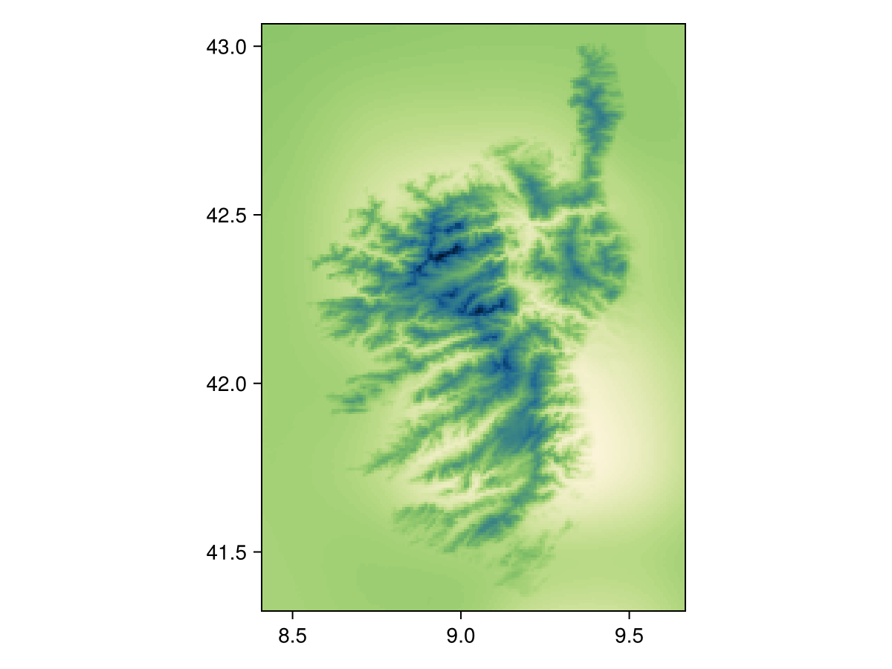
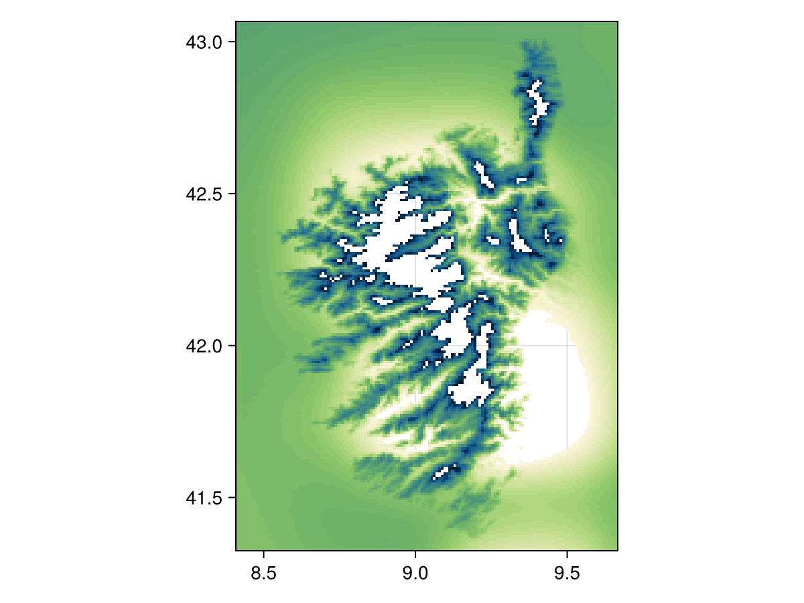
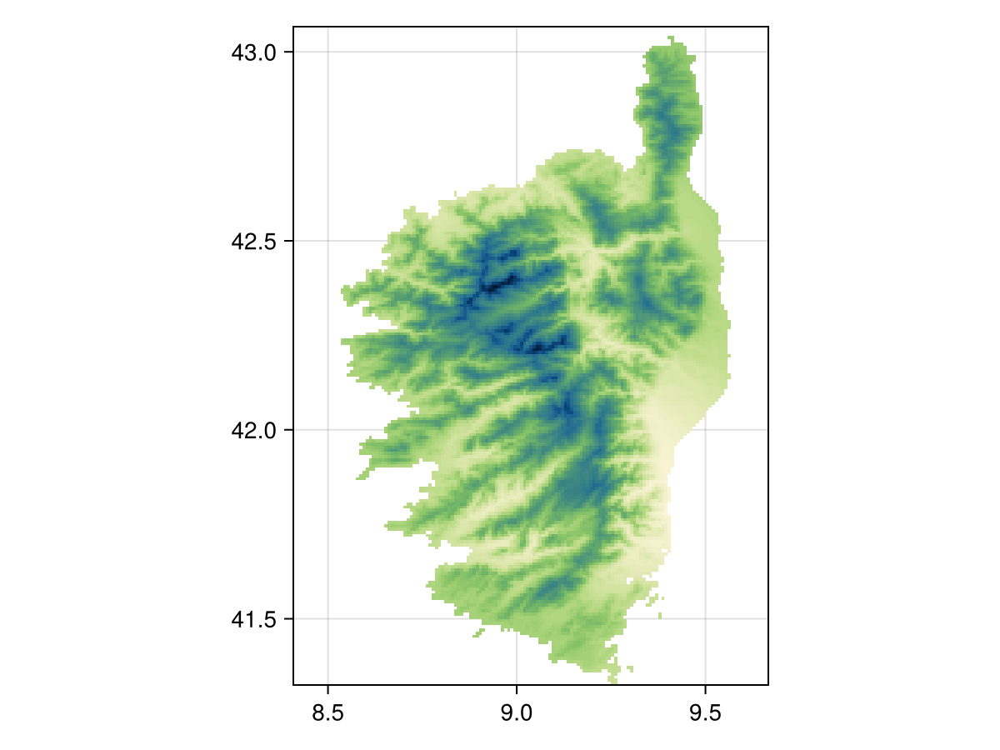

... mask a layer?
The process of masking refers to turning cells on a layer's grid to off, which will result in them being excluded from the analysis/display.
There are two ways to mask a layer – using the nodata! approach, and using the mask! approach. We use nodata! when working from a single layer, and mask! when using data stored in a second layer. Note that both approaches have a non-mutating version (nodata and mask, that return a modified copy of their layer).
using SpeciesDistributionToolkit
using Dates, Statistics
using CairoMakieWe will illustrate both approaches using the CHELSA2 temperature data for the month of September.
spatial_extent = (left = 8.412, bottom = 41.325, right = 9.662, top = 43.060)
temp2 =
SDMLayer(
RasterData(CHELSA2, AverageTemperature);
month = Month(9),
spatial_extent...,
)SDM Layer with 31559 UInt16 cells
Proj string: +proj=longlat +datum=WGS84 +no_defs
Grid size: (209, 151)
Using nodata!
When using nodata!, we can either indicate a value to remove from the layer, or pass a function. For example, we can mask the layer to remove all cells where the temperature is in the upper and lower 5%:
m, M = Statistics.quantile(values(temp2), [0.05, 0.95])
nodata(temp2, v -> !(m <= v <= M))SDM Layer with 28449 UInt16 cells
Proj string: +proj=longlat +datum=WGS84 +no_defs
Grid size: (209, 151)
The function given as the second argument must return true for a point that will be excluded from the layer. In other words, this behaves as the opposite of filter!.
Using mask!
When using mask!, the first layer will be modified so that only the cells that are also valued in the second layer are used. For example, we can use the fact that the CHELSA1 layers do not have values outside of land, to mask the CHELSA2 data:
temp1 =
SDMLayer(
RasterData(CHELSA1, AverageTemperature);
month = Month(9),
spatial_extent...,
)SDM Layer with 14432 Int16 cells
Proj string: +proj=longlat +datum=WGS84 +no_defs
Grid size: (209, 151)mask(temp2, temp1)SDM Layer with 14432 UInt16 cells
Proj string: +proj=longlat +datum=WGS84 +no_defs
Grid size: (209, 151)
Related documentation
SimpleSDMLayers.nodata! — Functionnodata!(layer::SDMLayer{T}, nodata::T) where {T}Changes the value of the layer representing no data. This modifies the layer passed as its first argument.
nodata!(layer::SDMLayer{T}, f)Removes the data matching a function
SimpleSDMLayers.nodata — Functionnodata(layer::SDMLayer, args...)Makes a copy and calls nodata! on it
SimpleSDMLayers.mask! — Functionmask!(layer::SDMLayer, template::SDMLayer)Updates the positions in the first layer to be those that have a value in the second layer.
SimpleSDMLayers.mask — Functionmask(layer::SDMLayer, template::SDMLayer)Returns a copy of the first layer masked according to the second layer. See also mask!.
A note about how this works
The SDMLayer type stores a BitMatrix (in the indices field) that tracks which cells in the raster are visible. This costs a little more memory, but allows to rapidly turn pixels on and off.